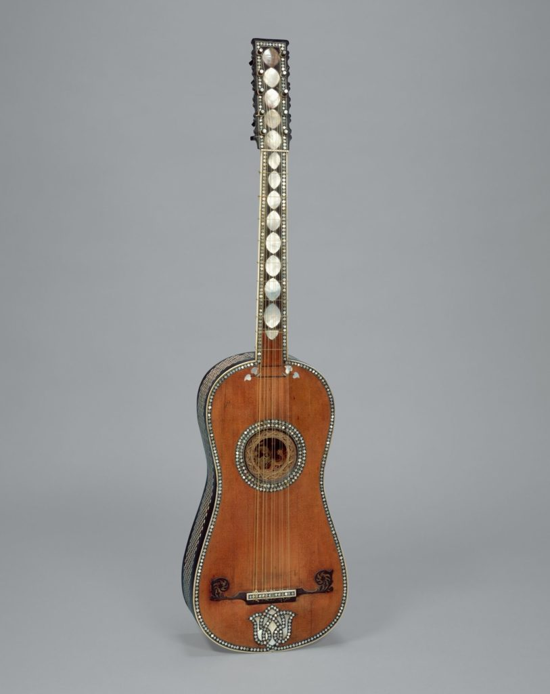

Renaissance
 𝄞 Renaissance betekent 'wedergeboorte'.
Het is een culturele periode in Europa tussen de 14de en de 16e eeuw. De kunstmuziek
in West-Europa werd gedomineerd door de Vlaamse Polyfonie (meerstemmigheid).
Deze kenmerkt zich door gelijkwaardige, zich onafhankelijk van elkaar bewegende stemmen en
opgebouwd uit losse, elkaar vaak imiterende fragmenten. Deze stemmen
werden a capella gezongen. In de muziek waren de
belangrijkste en beroemdste componisten voornamelijk afkomstig uit de Nederlanden.
Componisten en kunstenaars waren weliswaar nog steeds in dienst van de kerk of een adellijk hof,
maar begonnen meer en meer naam voor zichzelf te maken.
Gaandeweg werd de muziek homofoner: de verschillende stemmen zongen hun noten vaak gelijktijdig.
𝄞 De Renaissance gitaar (16e eeuw) heeft 4 snaren en korte hals
(8 fretten boven de klankkast).
De bovenste snaar is soms enkel en de drie daaronder dubbel.
Deze dubbele snaren komen we vandaag de dag nog tegen bij de 12 snarige gitaar,
waar overigens alle snaren dubbel zijn. Ook op Arabische instrumenten komen dubbele snaren veel voor.
Er werd voor het eerst speciaal voor de renaissance gitaar muziek geschreven
door onder andere Alonso Mudarra.
𝄞 Renaissance betekent 'wedergeboorte'.
Het is een culturele periode in Europa tussen de 14de en de 16e eeuw. De kunstmuziek
in West-Europa werd gedomineerd door de Vlaamse Polyfonie (meerstemmigheid).
Deze kenmerkt zich door gelijkwaardige, zich onafhankelijk van elkaar bewegende stemmen en
opgebouwd uit losse, elkaar vaak imiterende fragmenten. Deze stemmen
werden a capella gezongen. In de muziek waren de
belangrijkste en beroemdste componisten voornamelijk afkomstig uit de Nederlanden.
Componisten en kunstenaars waren weliswaar nog steeds in dienst van de kerk of een adellijk hof,
maar begonnen meer en meer naam voor zichzelf te maken.
Gaandeweg werd de muziek homofoner: de verschillende stemmen zongen hun noten vaak gelijktijdig.
𝄞 De Renaissance gitaar (16e eeuw) heeft 4 snaren en korte hals
(8 fretten boven de klankkast).
De bovenste snaar is soms enkel en de drie daaronder dubbel.
Deze dubbele snaren komen we vandaag de dag nog tegen bij de 12 snarige gitaar,
waar overigens alle snaren dubbel zijn. Ook op Arabische instrumenten komen dubbele snaren veel voor.
Er werd voor het eerst speciaal voor de renaissance gitaar muziek geschreven
door onder andere Alonso Mudarra.
Barok
𝄞 De barok wordt globaal gemarkeerd door de laat-16e-eeuwse revolte tegen polyfonie,
die aanleiding gaf tot de opkomst van de opera. Geleidelijk aan maakte de stile antico, de universele polyfone stijl van de 16e eeuw met meestal gewijde muziek, plaats voor de stile moderno of nuove musiche, bedoeld voor seculier gebruik.
De barokmuziek kon in het bijzonder gedijen
door de bloeiende muziekcultuur aan de diverse Europese vorstenhoven.
Veel rijke hooggeplaatsten hadden musici/componisten in dienst en/of fungeerden als hun mecenas.
Ook ten behoeve van kerkelijke erediensten werden in het tijdperk van de barok nieuwe muziekvormen ontwikkeld.
𝄞 Tijdens de barok begint de gitaar (zie foto onderaan de pagina) een serieuzere rol te spelen in de muzikale wereld.
De Barok gitaar heeft 5 snaren waarvan de eerste enkel is en de anderen dubbelkorig.
De stemming begint ook meer op deze van hedendaagse gitaren te lijken.
Deze gitaren produceerden een mooi sprankelend geluid en
werden door veel mensen bestempeld qua klank als een jonge klavecimbel.
